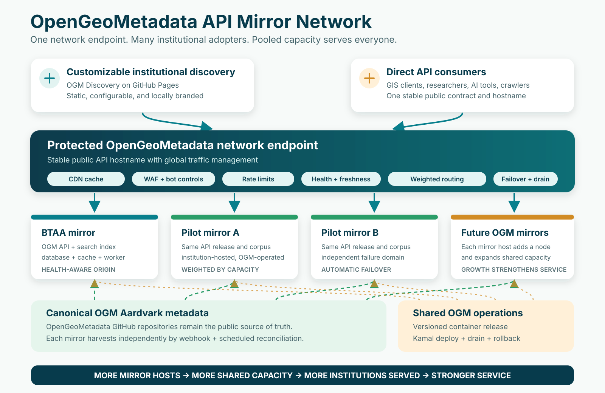

For library leadership
Executive Summary
The institutional ask, community return, reference cost, operating safeguards, and recommended three-node pilot.
Foundational community infrastructure proposal
A protected, health-aware network of institutional OGM API mirrors - paired with customizable abcdefgeo discovery sites - that adds capacity, resilience, and maintenance freedom with every new member.

For library leadership
The institutional ask, community return, reference cost, operating safeguards, and recommended three-node pilot.
For IT staff and geography librarians
GitHub synchronization, nightly indexing, webhook fan-out, layered caching, failover, security, recovery, monitoring, and institutional responsibilities.